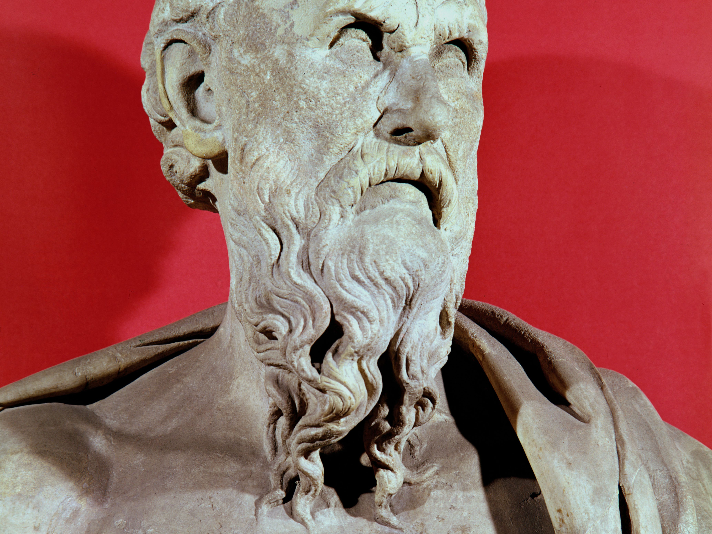

Sources of myths: literary and archaeological
The works of Hesiod:
The Theogony of Hesiod is the most complete and essential source of mythology regarding the origin of the gods (c. 700 BCE). Folktales and etiological myths accompany the extensive genealogy shown above. Some of these are shared in the context of a farmer's calendar, and a long rant about justice addressed to Hesiod's perhaps mythical brother Perses in The Works and Days. The orthodox perspective sees the two poems as having completely different themes. The Works and Days are a theodicy (a natural theology). However, the two poems can be read as a diptych, with each section reliant on the other. The Theogony establishes the gods' identities and associations. At the same time, Hesiod's Works and Days offer guidance on succeeding in a scary world, with Hesiod arguing that the most reliable—though far from certain—method is to be kind.
Other literary works
The Homeric Hymns are the source of several critical religious myths. Incomplete post-Homeric epics of varying dates and authors filled the gaps in the accounts of the Trojan War from the Iliad and Odyssey. The Homeric Hymns (shorter poems) are sources of several critical religious myths. Many lyric poets retained myths, but Pindar of Thebes' odes (flourished 6th–5th century BCE) are especially rich in myth and legend. The tragedians Aeschylus, Sophocles, and Euripides, all of whom lived in the 5th century BCE, are known for preserving a wide range of traditions in their works.
Callimachus, a poet and scholar in Alexandria during the Hellenistic period (323–30 BCE), documented numerous cryptic traditions. A mythographer named Euhemerus proposed that the gods were originally human, a position known as Euhemerism. Another scholar from the 3rd century BCE, Apollonius of Rhodes, maintained the most detailed account of the Argonauts' quest for the Golden Fleece.
'The Geography of Strabo' (1st century BCE), the 'Library of the pseudo-Apollodorus' (2nd-century), the ancient writings of Greek biographer Plutarch, and the works of Pausanias, a 2nd-century-CE historian, as well as the Latin Genealogies of Hyginus, a 2nd-century-CE mythographer, have all provided valuable Latin sources of later Greek mythology during the Roman Empire.
Archaeological discoveries

Heinrich Schliemann, a 19th-century German amateur archaeologist, discovered the Mycenaean civilization. Sir Arthur Evans, a 20th-century English archaeologist, found the Minoan civilization in Crete, both of which are critical to a 21st-century understanding of the development of myth and ritual in the Greek world. These finds shed light on Minoan society from 2200 to 1450 BCE and Mycenaean civilization from around 1600 to 1200 BCE; these eras were followed by a Dark Age that lasted until about 800 BCE. Unfortunately, the evidence for rituals at Mycenaean and Minoan sites is entirely based on archeological finds because the Linear B script (an ancient form of Greek found in both Crete and Greece) was primarily used to record inventories.
Geometric decorations on 8th-century BCE ceramics portray scenes from the Trojan War and Heracles' exploits. The excessive formality of the style, on the other hand, makes much of the identification problematic, and there is no inscriptional evidence to aid researchers in identifying and interpreting the designs.